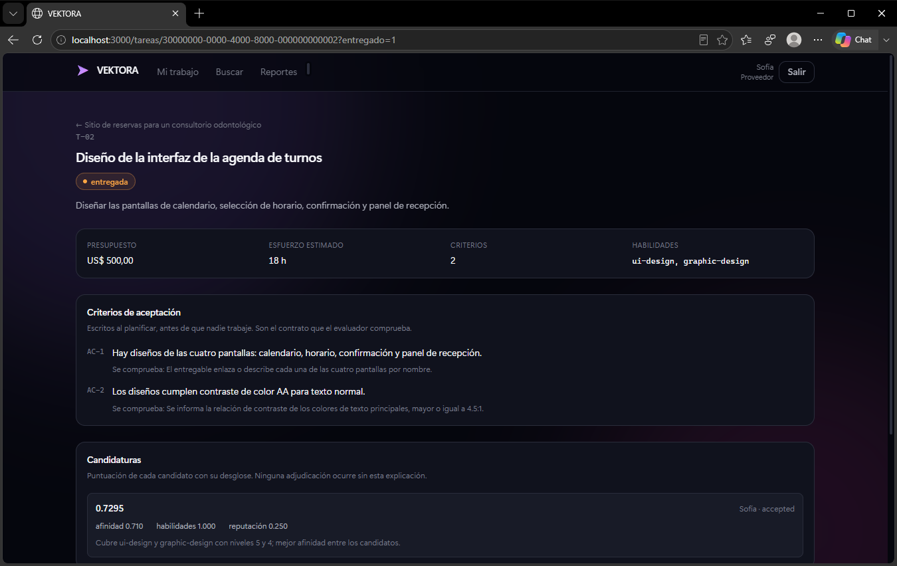

1Motivación
Organizar un proyecto —dividirlo en tareas, elegir quién hace cada una y revisar lo que se entrega— muchas veces cuesta más que el trabajo mismo, y recae en un cliente que no siempre sabe cómo hacerlo.
Objetivo: que ese trabajo de coordinación lo haga el sistema, de principio a fin.
2Cómo funciona
El cliente escribe qué quiere y cuánto puede gastar. A partir de ahí:
- Planifica. Un modelo de lenguaje divide el objetivo en tareas con dependencias.
- Asigna. Elige proveedor según afinidad, habilidades y reputación.
- Recibe el trabajo del proveedor.
- Evalúa. Una IA lo revisa contra los criterios acordados al inicio.
- Avanza. Actualiza la reputación y libera las tareas siguientes.
“Autonomy doesn’t remove accountability — it replaces it with traceability.”
3Arquitectura y prototipo

Next.js · PostgreSQL con pgvector · Groq, con Gemini de respaldo · Docker en Render y Aiven. GitHub Actions dispara a los agentes cada 10–15 minutos.
4Resultados
371pruebas automatizadas
0decisiones humanas en el ciclo
3entornos de despliegue
US$ 0costo del prototipo
5Conclusiones y próximos pasos
- Sin personas en el ciclo, el error más grave es una tarea que queda trabada. Encontramos cuatro casos y los resolvimos.
- La IA opina criterio por criterio, pero el veredicto lo calcula una regla fija: cada decisión queda explicada.
- Versión comercial con planes pagos: unos US$ 100 por mes más el uso de IA.
- Pagos integrados y apelación de veredictos.
- Pruebas con clientes y proveedores reales.